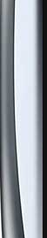
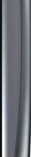
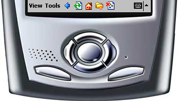

|  |
|
 | |
|  | |||
可怜网（clie.com.cn）是原Hi-PDA网友“番茄”（jimeinstein）搭建的适合于掌上电脑、PDA浏览的网站，clie意为“Chinese Lite Info Express”（中文轻资讯快报），亦与索尼的PDA品牌Clié相仿。 Hi-PDA上关于可怜网的帖子 发表于2003年10月22日。
网页里的电脑博物馆搭建的“小可怜网”（littleclie.dnbwg.com）模仿了可怜网的新闻订阅功能，它可以通过Pocket IE（Pocket PC/Windows CE/Windows Mobile）、Xiino（Palm OS）等旧式移动浏览器访问，也支持通过HandStory、iSilo等离线移动阅读工具订阅。
此网页版模拟器使用iFrame模拟原始移动网页显示效果，并非精确还原，可以使用模拟器窗口中“后退”，“刷新”，“主页”三个按钮进行页面间导航。